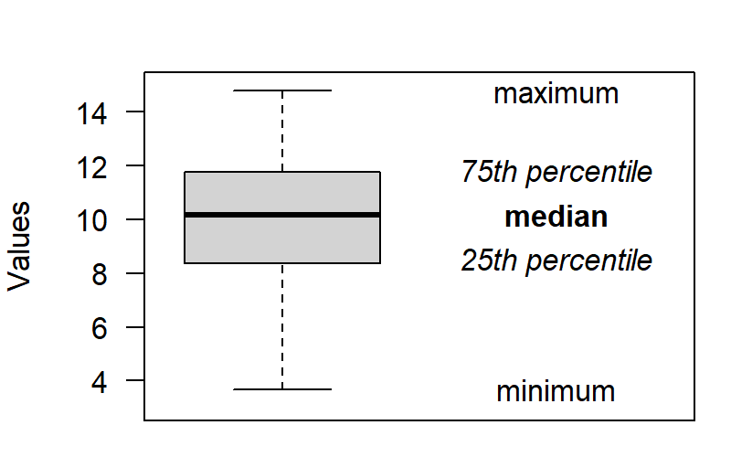
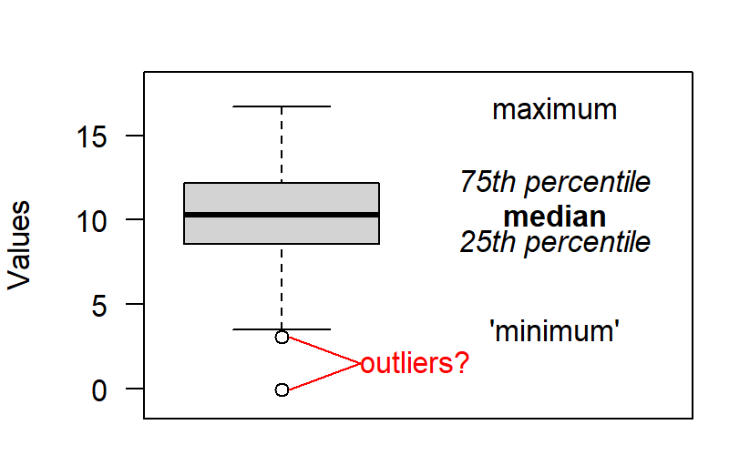
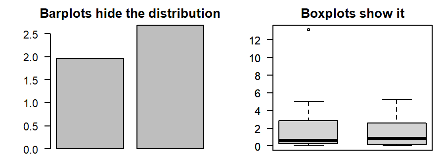
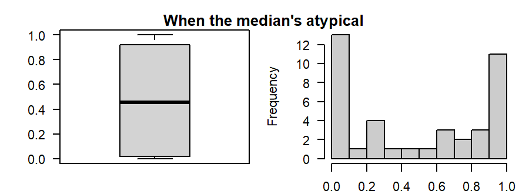
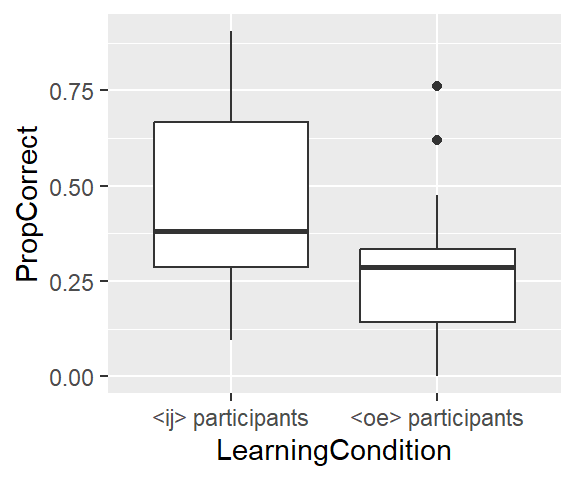
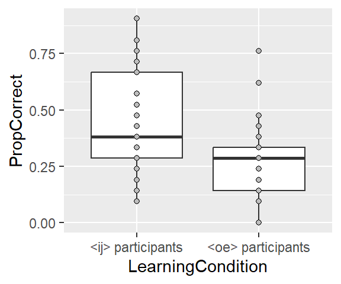
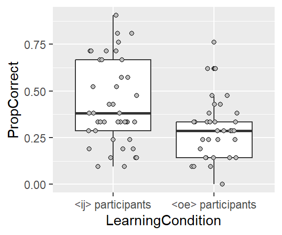
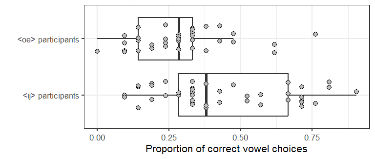

Tutorial: Drawing a boxplot
R
graphs
tutorial
In the two previous blog posts, you’ve learnt to draw simple but informative scatterplots and line charts. This time, you’ll learn how to draw boxplots.
What’s a boxplot?
A boxplot is a graphical display of a sample’s five-number summary: the minimum, the maximum, the median (i.e., the middle value if you sort the data from high to low), and the 25th and 75th percentiles. The 25th percentile is the value below which 25% of the data lie; the 75th percentile is the value below which 75% of the data lie. The range between the 25th and 75th percentiles contains 50% of the sample and is known as the inter-quartile range.
A boxplot might look like the one below–the median is highlighted by a thick line, the 25th and 75th are displayed by a box, and the minimum and maximum are plotted as ‘whiskers’:
Often, though, you’ll also see some points that lie beyond the whiskers. These are values that lie too far from the bulk of data, and they’re commonly referred to as outliers. Here’s an example:

It’s important to note, however, that these outliers may be perfectly valid observations, so you shouldn’t remove them from the data set just because they show up in a boxplot.
When to use boxplots, and when there are better choices
Boxplots are often a good choice when you want to compare two or more groups. In particular, I’ll take a boxplot over the ubiquitous ‘mean-only’ barplot any day. The plot belows illustrates the problem with barplots: the ‘mean-only’ barplots on the left make a crisp impression, but we have no way of knowing how large the 0.6-point difference between the means is in practical terms. (Error bars only slightly alleviate this for me.) Additionally, we don’t know how the data are really distributed—knowing this is usually important when interpreting the results. The boxplots on the right, by contrast, show that—relative to the spread of the data—a 0.6-point difference is tiny. Moreover, they show that both samples have a skewed distribution: the lower 50% of the data is restricted to a small range, whereas the upper 50% is spread out much more.

That said, there are situations where boxplots aren’t optimal. One such situation is when the median is actually fairly atypical of the data. From the left panel below, we would correctly gather that the sample median is slightly higher than 0.4 and that 50% of the data lies between 0.1 and 0.9. A moment’s thought shows that this means that a quarter of the data lies squished between 0 and 0.1 and another quarter between 0.9 and 1, but this may not be something you consciously think of when leafing through a paper—what you focus on is the big white box and the thick line. In this case, the histogram on the right does a much better job of highlighting the interesting patterns in the data—viz., that the distribution is strongly bimodal.

My point is this: Boxplots are much better than your run-of-the-mill barplots showing the group means, but be willing to look for alternatives when you need to—or ought to—highlight particular aspects of the data.
Tutorial: Drawing boxplots in ggplot2
What you’ll need
- The free program R, the graphical user interface RStudio, and the add-on package
ggplot2. See my previous post when you need help with this.
- A dataset. For this tutorial we’re going to work with another dataset on receptive multilingualism that you can download to your hard disk. The dataset contains three variables; what interests us is whether the proportion of responses to Dutch words with the digraph ij (
PropCorrect) differs according theLearningConditionto which the participants were assigned.
Preliminaries
In RStudio, read in the data.
dat <- read.csv("https://homeweb.unifr.ch/VanhoveJ/Pub/Data/VowelChoices_ij.csv",
stringsAsFactors = TRUE)If the summary looks like this, you’re good to go.
summary(dat) Subject LearningCondition PropCorrect
S10 : 1 <ij> participants:43 Min. :0.0000
S100 : 1 <oe> participants:37 1st Qu.:0.2262
S11 : 1 Median :0.3333
S12 : 1 Mean :0.3685
S14 : 1 3rd Qu.:0.4762
S15 : 1 Max. :0.9048
(Other):74 Now load the ggplot2 package we’ll be using.
Update (2023-08-08): You could also load the entire tidyverse suite instead.
library(ggplot2)A first attempt
The first three lines of code specify the data frame that the data are to be read from and the variables that go on the x- and y-axis. By setting LearningCondition as the x-variable, we make it clear that we want to compare the accuracy data between these groups of participants. The fourth line specifies that these data should be rendered as boxplots.
ggplot(data = dat,
aes(x = LearningCondition,
y = PropCorrect)) +
geom_boxplot()
This first attempt already produces a very respectable result. We would eventually like to label the axes more appropriately and get rid of the grey background, but all in all, this is pretty decent.
Adding the individual data points
One more substantial thing we can add to the graph is the individual data points that the boxplots are based on. You don’t have to do this, but particularly when the number of observations is fairly small and the data aren’t too coarse, it may be interesting to see how the data are distributed within the boxes and whiskers.
To add the individual data points to the boxplots, simply add a geom_point() layer to the previous code. I’ve specified that the points should be grey circles, but you can simply use geom_point() instead of the fifth line.
ggplot(data = dat,
aes(x = LearningCondition,
y = PropCorrect)) +
geom_boxplot() +
geom_point(pch = 21, fill = "grey")
Now, some participants had the same number of correct responses, but from the graph you can’t tell which: the points are just plotted on top of each other. To remedy this, we can ‘jitter’ the position of the data points using the position_jitter command. Note that I set the height parameter to 0 as I don’t want to render proportions of, say, 0.24 as 0.28; I just want to spread apart the data points horizontally:
ggplot(data = dat,
aes(x = LearningCondition,
y = PropCorrect)) +
geom_boxplot() +
geom_point(pch = 21, fill = "grey",
position = position_jitter(width = 0.25, height = 0))
The final product
You’ll notice that in the plot above, it appears as though three ‘outlier.shape = NA in the geom_boxplot() call.
Second, the y-axis should be properly labelled, whereas the label for the x-axis seems to be superfluous (the information is already contained in the tick labels). Change this using the ylab() and xlab() calls.
Third, personally I prefer white backgrounds. Simply adding theme_bw() to the call overrides the grey default. theme_bw(8) means that the font size will be slightly smaller, which is okay.
Lastly, we can flip the x- and y-axes using coord_flip(). The main advantage here is that doing so saves some vertical space on the page, which means there’s more room for other graphs!
ggplot(data = dat,
aes(x = LearningCondition,
y = PropCorrect)) +
geom_boxplot(outlier.shape = NA) +
geom_point(pch = 21, fill = "grey",
position = position_jitter(width = 0.25, height = 0)) +
xlab("") +
ylab("Proportion of correct vowel choices") +
theme_bw(8) +
coord_flip()
Software versions
devtools::session_info()─ Session info ───────────────────────────────────────────────────────────────
setting value
version R version 4.3.1 (2023-06-16 ucrt)
os Windows 10 x64 (build 18363)
system x86_64, mingw32
ui RTerm
language (EN)
collate English_United Kingdom.utf8
ctype English_United Kingdom.utf8
tz Europe/Zurich
date 2023-08-09
pandoc 3.1.1 @ C:/Program Files/RStudio/resources/app/bin/quarto/bin/tools/ (via rmarkdown)
─ Packages ───────────────────────────────────────────────────────────────────
package * version date (UTC) lib source
cachem 1.0.8 2023-05-01 [1] CRAN (R 4.3.1)
callr 3.7.3 2022-11-02 [1] CRAN (R 4.3.1)
cli 3.6.1 2023-03-23 [1] CRAN (R 4.3.1)
colorspace 2.1-0 2023-01-23 [1] CRAN (R 4.3.1)
crayon 1.5.2 2022-09-29 [1] CRAN (R 4.3.1)
devtools 2.4.5 2022-10-11 [1] CRAN (R 4.3.1)
digest 0.6.33 2023-07-07 [1] CRAN (R 4.3.1)
dplyr 1.1.2 2023-04-20 [1] CRAN (R 4.3.1)
ellipsis 0.3.2 2021-04-29 [1] CRAN (R 4.3.1)
evaluate 0.21 2023-05-05 [1] CRAN (R 4.3.1)
fansi 1.0.4 2023-01-22 [1] CRAN (R 4.3.1)
farver 2.1.1 2022-07-06 [1] CRAN (R 4.3.1)
fastmap 1.1.1 2023-02-24 [1] CRAN (R 4.3.1)
fs 1.6.3 2023-07-20 [1] CRAN (R 4.3.1)
generics 0.1.3 2022-07-05 [1] CRAN (R 4.3.1)
ggplot2 * 3.4.2 2023-04-03 [1] CRAN (R 4.3.1)
glue 1.6.2 2022-02-24 [1] CRAN (R 4.3.1)
gtable 0.3.3 2023-03-21 [1] CRAN (R 4.3.1)
htmltools 0.5.5 2023-03-23 [1] CRAN (R 4.3.1)
htmlwidgets 1.6.2 2023-03-17 [1] CRAN (R 4.3.1)
httpuv 1.6.11 2023-05-11 [1] CRAN (R 4.3.1)
jsonlite 1.8.7 2023-06-29 [1] CRAN (R 4.3.1)
knitr 1.43 2023-05-25 [1] CRAN (R 4.3.1)
labeling 0.4.2 2020-10-20 [1] CRAN (R 4.3.0)
later 1.3.1 2023-05-02 [1] CRAN (R 4.3.1)
lifecycle 1.0.3 2022-10-07 [1] CRAN (R 4.3.1)
magrittr 2.0.3 2022-03-30 [1] CRAN (R 4.3.1)
memoise 2.0.1 2021-11-26 [1] CRAN (R 4.3.1)
mime 0.12 2021-09-28 [1] CRAN (R 4.3.0)
miniUI 0.1.1.1 2018-05-18 [1] CRAN (R 4.3.1)
munsell 0.5.0 2018-06-12 [1] CRAN (R 4.3.1)
pillar 1.9.0 2023-03-22 [1] CRAN (R 4.3.1)
pkgbuild 1.4.2 2023-06-26 [1] CRAN (R 4.3.1)
pkgconfig 2.0.3 2019-09-22 [1] CRAN (R 4.3.1)
pkgload 1.3.2.1 2023-07-08 [1] CRAN (R 4.3.1)
prettyunits 1.1.1 2020-01-24 [1] CRAN (R 4.3.1)
processx 3.8.2 2023-06-30 [1] CRAN (R 4.3.1)
profvis 0.3.8 2023-05-02 [1] CRAN (R 4.3.1)
promises 1.2.0.1 2021-02-11 [1] CRAN (R 4.3.1)
ps 1.7.5 2023-04-18 [1] CRAN (R 4.3.1)
purrr 1.0.1 2023-01-10 [1] CRAN (R 4.3.1)
R6 2.5.1 2021-08-19 [1] CRAN (R 4.3.1)
Rcpp 1.0.11 2023-07-06 [1] CRAN (R 4.3.1)
remotes 2.4.2.1 2023-07-18 [1] CRAN (R 4.3.1)
rlang 1.1.1 2023-04-28 [1] CRAN (R 4.3.1)
rmarkdown 2.23 2023-07-01 [1] CRAN (R 4.3.1)
rstudioapi 0.15.0 2023-07-07 [1] CRAN (R 4.3.1)
scales 1.2.1 2022-08-20 [1] CRAN (R 4.3.1)
sessioninfo 1.2.2 2021-12-06 [1] CRAN (R 4.3.1)
shiny 1.7.4.1 2023-07-06 [1] CRAN (R 4.3.1)
stringi 1.7.12 2023-01-11 [1] CRAN (R 4.3.0)
stringr 1.5.0 2022-12-02 [1] CRAN (R 4.3.1)
tibble 3.2.1 2023-03-20 [1] CRAN (R 4.3.1)
tidyselect 1.2.0 2022-10-10 [1] CRAN (R 4.3.1)
urlchecker 1.0.1 2021-11-30 [1] CRAN (R 4.3.1)
usethis 2.2.2 2023-07-06 [1] CRAN (R 4.3.1)
utf8 1.2.3 2023-01-31 [1] CRAN (R 4.3.1)
vctrs 0.6.3 2023-06-14 [1] CRAN (R 4.3.1)
withr 2.5.0 2022-03-03 [1] CRAN (R 4.3.1)
xfun 0.39 2023-04-20 [1] CRAN (R 4.3.1)
xtable 1.8-4 2019-04-21 [1] CRAN (R 4.3.1)
yaml 2.3.7 2023-01-23 [1] CRAN (R 4.3.0)
[1] C:/Users/VanhoveJ/AppData/Local/R/win-library/4.3
[2] C:/Program Files/R/R-4.3.1/library
──────────────────────────────────────────────────────────────────────────────